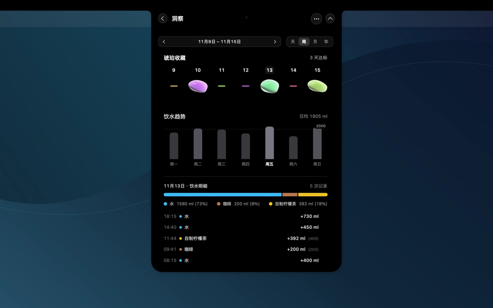
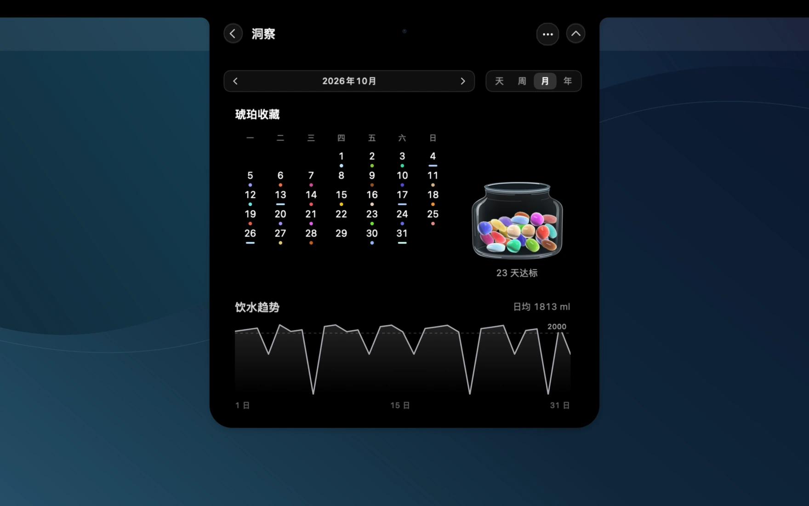
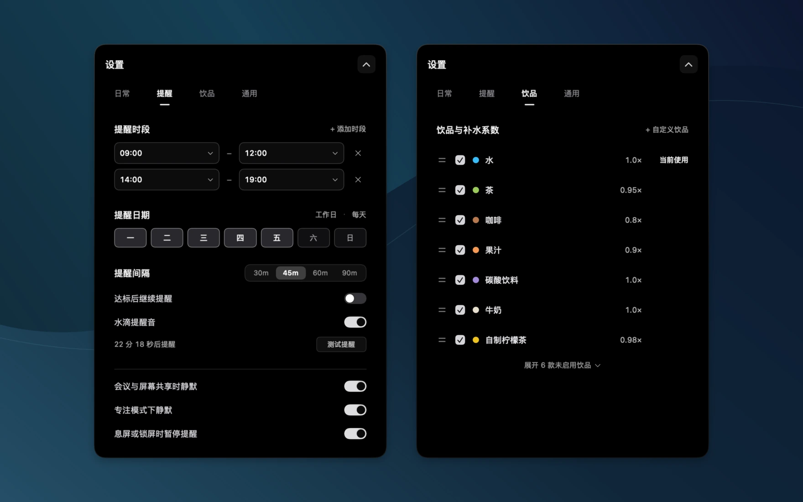

点击 Dock 图标，体验互动演示。

在刘海下，随手记一杯
饮水面板平时收在刘海里，到了提醒时间会自动展开。想记一杯时，随时点一下菜单栏水滴，或按 ⌥ W 唤出面板。
把达标的这一天，
收成一颗琥珀
达到饮水目标时，水面会弹起一滴水，凝成一颗琥珀。它的颜色来自今天喝过的饮品，形状随日期变化。

看看这一周喝得怎么样
一眼看出这周哪天达标、哪天喝得少。选中一天，就能回看当天的饮品占比和每笔记录。

攒下一整月的琥珀
在 Sipmetra Pro 的月历上回看达标的日子，再打开玻璃罐，看看这个月收集了哪些琥珀。

按自己的节奏喝水
设置提醒间隔和时段，给午休留出空档。水、茶、咖啡都可以记，常喝的饮品还可以排到前面。
